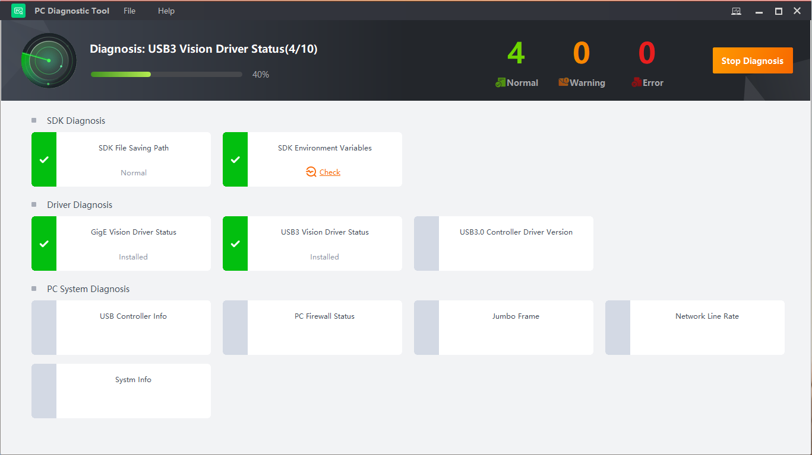
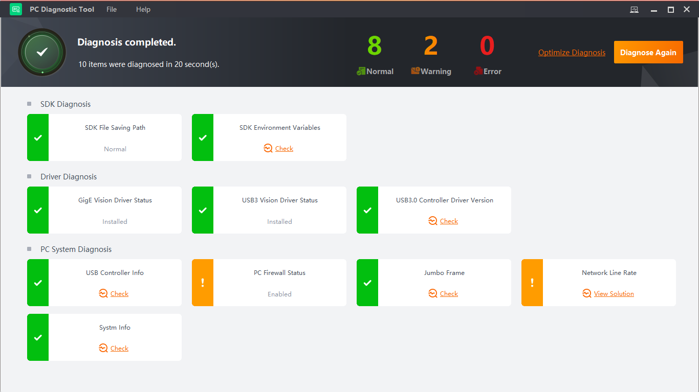

You can use the tool to check the performance of the running environment and take actions accordingly to improve the items diagnosed with warnings and errors. The whole process is divided into three stages: starting the diagnosis, checking the diagnostic result, and diagnosing again.
When exceptions of the frame grabber occur, you can use the tool to diagnose the related SDKs, driver, and PC system. Click Start Diagnosis to start the diagnosis as shown below.
SDK Diagnosis: Check if the SDK environment variables are normal and the SDK files are under the following 2 directory: C:\Windows\SysWoW64 and C:\Windows\System32.
Driver Diagnosis: Check whether the GigE Vision driver and the USB3 Vision driver are normally installed. Check the USB3.0 controller driver version.
PC System Diagnosis: Check the PC firewall status, network line rate, USB controller information, NIC jumbo frame information, and PC system information.

Figure 1 Start DiagnosisClick Stop Diagnosis to stop the current diagnosis.
After the diagnosis is completed, the diagnostic results are categorized into three types according to severity: normal, warning, and error.
If there are items to be optimized, click Check or View Solution to improve them one after one.

Figure 2 Diagnostic ResultAfter you handle the warnings and errors, you can diagnose all items again or diagnose again only the improved items.
Optimize Diagnosis: Click Optimize Diagnose. Those items diagnosed with warnings and errors will be diagnosed again, and you can also continue to improve these items.
Diagnose Again: Click Diagnose Again, and the tool will diagnose all the items again.